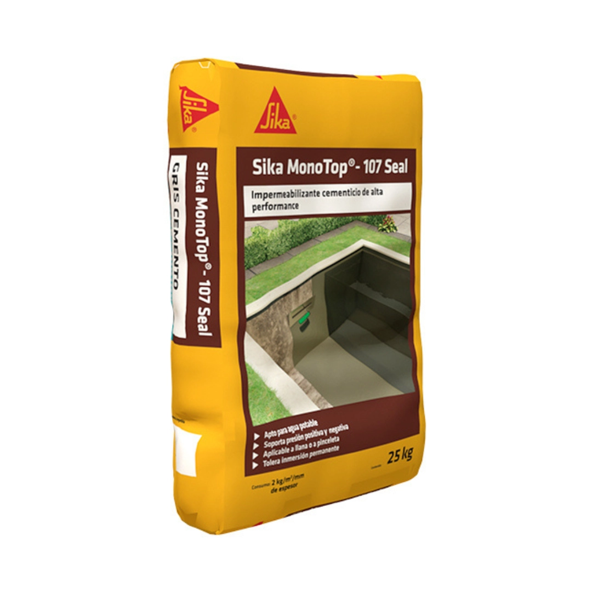

MI-01
Descripción: Sika MonoTop-107 es un mortero cementício modificado con polímeros, impermeabilizante y monocomponente, listo para usar. Tolera presión de agua positiva y negativa.
Bolsa de 25kg.
Aproximadamente 2 kg/m² por capa de 1mm de espesor aplicado a llana, mínimo 2 capas. Aproximadamente 1 a 1,5kg/m² por mano aplicado a pincel, mínimo 2 manos. El consumo total depende del tipo y rugosidad del sustrato y de la presión de agua existente.